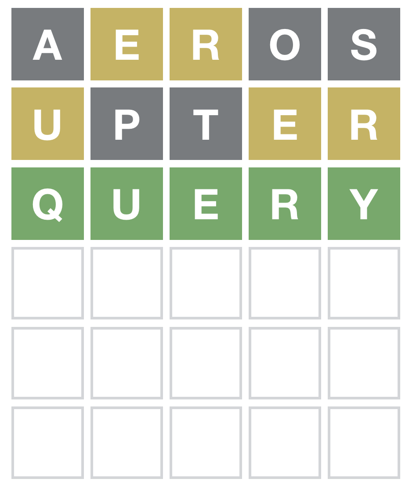
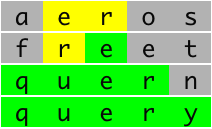

Playing (and winning) Wordle with R
Introduction
Unless you have been away for the last month, you, your family or friends have been talking about or playing Wordle. It is a very straightforward game which reminds us (old enough) of the great MasterMind, but with words.
The idea is very simple. In the original version by Josh Wardle, we try to guess a (English) word of five letters. After each guess the game shows you what letters are in the answer in the right position (green), in the answer but in a wrong position (yellow) or not in the answer at all (gray).
For example, here is the screenshot of the most recent one I played (Jan 10)

As you can see, I guessed the word in 3 tries out of 6 allowed. Many variations exist now, including one in Spanish. There are many reasons why it has become a viral phenomenon , most likely because Wardle added a sharing element to the game, letting users copy their results in the form of a grid of colored squared emojis.
Wordle 202 3/6
— Esteban Moro (@estebanmoro) January 7, 2022
⬜⬜🟨🟨⬜
⬜🟩⬜🟨🟨
🟩🟩🟩🟩🟩 😎
Since Wardle publishes only one puzzle per day, players can compare their results on Twitter or by message, allowing for synchronized and unhurried social interaction.
Cracking the game
Although the game is not so difficult (another of its merits), the obvious question is what is the best strategy to win the game every day. In this post, we will investigate this question with the help of R and in our journey, we will learn much more about how the game is designed.
To do it, we will use the fantastic wordle package created by Mikefc [@coolbutuseless](https://twitter.com/coolbutuseless). This package allows you to play Wordle in the R console [with play_wordle()]. Most interestingly, it can also help you play the online version through the WordleHelper class. For example, this is how we can use it for the Jan 10 puzzle. Let’s initialize the game.
#remotes::install_github('coolbutuseless/wordle')
library(wordle)
helper <- WordleHelper$new(nchar = 5)
dictionary <- helper$words
length(dictionary)
## [1] 12972As we can see, there are 12972 words of 5 letters in the Wordle dictionary.
My initial guess was aeros, and I got ” ⬜ 🟨 🟨 ⬜ ⬜ “. We can use this to get us the list of options compatible with that answer.
helper$update("aeros", c('gray', 'yellow', 'yellow', 'gray', 'gray'))
helper$words## [1] "bider" "biker" "biner" "biter" "blert" "bluer"
## [7] "brede" "breed" "breem" "breer" "breid" "breme"
## [13] "brent" "brere" "breve" "bribe" "bride" "brief"
## [19] "brier" "brine" "brize" "brule" "brume" "brute"
## [25] "buyer" "cheer" "chere" "chert" "cider" "citer"
## [31] "clerk" "creed" "creek" "creel" "creep" "creme"
## [37] "crepe" "crept" "crepy" "crewe" "cried" "crier"
## [43] "crime" "crine" "cripe" "crude" "cruel" "cruet"
## [49] "cruve" "cryer" "cuber" "cuter" "cyber" "cyder"
## [55] "dicer" "diker" "dimer" "diner" "diver" "dreck"
## [61] "dreed" "dreer" "drent" "drere" "drice" "dried"
## [67] "drier" "drive" "drupe" "dryer" "duper" "edger"
## [73] "egger" "eider" "elder" "elver" "ember" "emeer"
## [79] "emerg" "emery" "emmer" "emure" "ender" "enter"
## [85] "entry" "enure" "enurn" "erect" "erick" "ering"
## [91] "erned" "eruct" "erupt" "erven" "ervil" "ether"
## [97] "evert" "every" "exert" "exurb" "fiber" "fibre"
## [103] "fiere" "fiery" "fifer" "filer" "finer" "fiver"
## [109] "fixer" "fleer" "fleur" "flier" "flyer" "freed"
## [115] "freer" "freet" "freit" "fremd" "frere" "fried"
## [121] "frier" "frize" "fryer" "fumer" "giber" "giver"
## [127] "gluer" "grebe" "grece" "greed" "greek" "green"
## [133] "greet" "grege" "grein" "greve" "grice" "gride"
## [139] "grief" "grike" "grime" "gripe" "grize" "grued"
## [145] "gruel" "grufe" "grume" "gryce" "gryde" "gryke"
## [151] "grype" "hider" "hiker" "hiver" "huger" "hyper"
## [157] "icier" "icker" "idler" "iller" "inerm" "inert"
## [163] "infer" "inker" "inner" "inter" "inure" "irked"
## [169] "ither" "jiber" "jiver" "kiter" "kreep" "kreng"
## [175] "krewe" "liber" "lifer" "liger" "liker" "liner"
## [181] "liter" "litre" "liver" "livre" "lucre" "luger"
## [187] "luter" "luxer" "miler" "mimer" "miner" "miter"
## [193] "mitre" "mixer" "muter" "nicer" "niger" "niner"
## [199] "niter" "nitre" "nixer" "nuder" "pheer" "piert"
## [205] "piker" "piler" "piper" "plier" "plyer" "predy"
## [211] "preed" "preen" "preif" "premy" "prent" "preve"
## [217] "prexy" "price" "pride" "pried" "prief" "prier"
## [223] "prime" "prize" "prude" "prune" "pryer" "pucer"
## [229] "puker" "puler" "queer" "quern" "query" "quire"
## [235] "rheme" "rheum" "rhime" "rhine" "rhyme" "rhyne"
## [241] "riced" "ricer" "ricey" "rider" "ridge" "rieve"
## [247] "rifer" "rifle" "rifte" "riled" "riley" "rille"
## [253] "rimed" "rimer" "riped" "ripen" "riper" "rived"
## [259] "rivel" "riven" "river" "rivet" "rubel" "ruble"
## [265] "ruche" "ruder" "rudie" "ruffe" "ruled" "ruler"
## [271] "rumen" "runed" "rupee" "ryked" "rymme" "ryper"
## [277] "their" "there" "therm" "tiger" "tiler" "timer"
## [283] "titer" "titre" "treck" "treed" "treen" "treif"
## [289] "trend" "treyf" "tribe" "trice" "tride" "tried"
## [295] "trier" "trike" "trine" "tripe" "trite" "truce"
## [301] "trued" "truer" "tryer" "tryke" "tuber" "tuner"
## [307] "tuyer" "tweer" "twerk" "twerp" "twier" "twire"
## [313] "twyer" "tyler" "udder" "ulcer" "umber" "umbre"
## [319] "under" "upper" "upter" "urbex" "urdee" "ureic"
## [325] "urent" "urged" "urger" "urine" "urite" "urned"
## [331] "urped" "uteri" "utter" "viler" "viner" "viper"
## [337] "viver" "where" "wider" "wiper" "wiver" "wreck"
## [343] "wried" "wrier" "write" "wryer" "yfere" "yrent"
## [349] "yrneh"For my second guess I used upter and I got ” 🟨 ⬜ ⬜ 🟨 🟨”
helper$update("upter", c('yellow', 'gray', 'gray', 'yellow', 'yellow'))
helper$words## [1] "brule" "brume" "crude" "cruve" "emure" "enure" "enurn"
## [8] "exurb" "grufe" "grume" "inure" "lucre" "quern" "query"
## [15] "quire" "rheum" "ruble" "ruche" "rudie" "ruffe"The number of candidates has been reduced enormously. In the next round, I tried query and that solved it.
Obviously, the game’s strategy is encoded in how to choose the next guess from the list of candidate words given the restrictions so far. Let’s try different choices.
Random choice
The first and obvious choice is to choose randomly from the list of candidates. First we code the game using the wordle package and the WordleGame class. We are going to modify the code from
Matthew Kay to define a function that plays the game for a given word:
play_game <- function(word,first_guess,quiet=FALSE){
helper = WordleHelper$new(nchar = nchar(word)) #initialize the game
game = WordleGame$new(helper$words, target_word = word)
#make the first guess
if (!is.null(first_guess)) {
helper$update(first_guess,
game$try(first_guess, quiet = quiet))
}
#iterate until solved
while (!game$is_solved()) {
guess = score_words(helper$words)$word[[1]] #choose next guess
helper$update(guess, game$try(guess,quiet=quiet))
}
game$attempts
}As we can see in every step we score the words and return the one with maximum score. To start, we are going to select them randomly:
score_words <- function(words){
data.frame(word=words,score=runif(length(words))) %>% arrange(score)
}Let’s try it out for Jan 10 word
set.seed(1)
answer <- play_game(word="query",first_guess="aeros",quiet=T)Since the unicode does not render properly in markdown, here is screenshot:

Not bad, we got the solution in 4 tries.
How good is this strategy? We need to define an performance metric to evaluate each strategy. Edited As with any algorithm, we can test its performance measuring how well does the strategy against a sample of chosen target words. We are going to take three of them
The first one is against a random choice of target word from the dictionary of 5 letters in English. There are 12972 words to choose from.
However, in the original game, Wardle narrowed down the list of Wordle words to about 2500. So we will evaluate how well our strategy does against this list. You can download the list of possible answers here
possible_answers <- read.csv("./data/possible_answers.txt",header=F)- Finally, we can measure how well the strategy performs for the past wordle answers. [Caution: this contains spoilers!]. Lucky for us Matthew Kay has compiled a list of them, to which I added the last ones here
past_answers <- read.csv("./data/past_answers.csv",header=F)Let’s evaluate each performance metric. First a random sample of words from the dictionary (only 1000).
set.seed(1)
helper = WordleHelper$new(nchar = 5)
dictionary <- helper$words
first_guess <- "aeros"
dictionary_games <- sapply(sample(dictionary,1000),
\(w) tryCatch(length(play_game(w,first_guess,quiet=T)),
error=function(e) NA))now for the possible answers
possible_answers_games <- sapply(possible_answers[,1],
\(w) tryCatch(length(play_game(w,first_guess,quiet=T)),
error=function(e) NA))and finally for the previous wordle answers
past_answers_games <- sapply(past_answers[,1],
\(w) tryCatch(length(play_game(w,first_guess,quiet=T)),
error=function(e) NA))How well did they do? Here is the distribution of the number of tries for each case
bind_rows(tibble(selection="Dictionary",tries=dictionary_games),
tibble(selection="Possible answers",tries=possible_answers_games),
tibble(selection="Past answers",tries=past_answers_games)) %>%
group_by(selection,tries) %>%
summarise(n=n()) %>% mutate(freq=n/sum(n)) %>%
ggplot(aes(x=tries,y=freq,fill=selection)) +
geom_bar(position="dodge",stat="identity") +
labs(x="Tries",fill="",y="Frequency",title="Using random words") +
scale_fill_tableau() +
geom_vline(xintercept = 6.5,linetype=2)
Not bad! Most of the time, we solved the game in 6 or fewer tries. Actually, we get
list("Dictionary"=dictionary_games,
"Possible answers"=possible_answers_games,
"Past answers"=past_answers_games) %>%
map_dfr(\(answers) tibble("Average number of tries"=round(mean(answers),2),
"Probability of winning (%)"=round(mean(answers<7)*100,2)),
.id="Selection") %>%
kableExtra::kbl() %>%
kableExtra::kable_paper(bootstrap_options = "striped", full_width = F)| Selection | Average number of tries | Probability of winning (%) |
|---|---|---|
| Dictionary | 5.10 | 83.50 |
| Possible answers | 4.85 | 88.86 |
| Past answers | 4.78 | 89.37 |
As we can see random guessing is already a good strategy, solving it in less than 6 tries 82% of the times (for random words in the dictionary) and around 89% for the list of possible and past answers. But let’s see if we can do better.
Using the frequency of words
(Edited) One of the most interesting findings about the game (rediscovered by Matthew Kay) is that the answers each day are not chosen randomly from the list of possible 5 letter words in the English dictionary. The very Wardle said in an interview in the New York Times that he narrowed down the list of Wordle words to about 2,500 which are most likely to be known by his partner (the first recipient of the game). That means that there are some words that have more probability to be the target word each day than others. To see that, we will plot the distributions of the rank of the past answers in the corpus of words of English. We are going to use two sources: the corpus of commonly-used words from the Google Web Trillion Word Corpus and the BNC word frequency list and put them together:
helper = WordleHelper$new(nchar = 5)
freq = tibble(word = helper$words) %>%
left_join(read.csv("./data/unigram_freq.csv"), by = "word") %>%
left_join(
read.csv("./data/bnc_freq.csv") %>%
group_by(word) %>%
summarise(count = sum(count)),
by = "word"
) %>%
mutate(
count.x = ifelse(is.na(count.x), 0, count.x),
count.y = ifelse(is.na(count.y), 0, count.y),
count = count.x/sum(count.x) + count.y/sum(count.y),
# need a nonzero count for all words, so just assume words that don't
# appear at all are half as frequent as the least frequent appearing word
count = ifelse(count == 0, min(count[count != 0])/2, count),
# rough log of the count shifted above 0
# (we'll want this later)
log_count = log(count) - log(min(count)/2),
rank = rank(-count,ties.method = "random",)
) The following graph compares the distribution of ranks of randomly selected words in the wordle dictionary (flat) with the one of the past answers.
ggplot() + geom_density(data=freq,aes(x=rank,col="All words"),bw=10) +
geom_density(data=freq %>% filter(word %in% past_answers[,1]),
aes(x=rank,col="Past answers"),bw=10)+
scale_color_tableau() + labs(col="") Most of the target words in the past answers are chosen from the most frequent words in English. The distribution decays slowly, which means that some unusual (rank > 10000) words are likely. As Matthew suggests, “this is probably a sensible word selection strategy for making a good game, since it makes the puzzle not just a bunch of very common words (but also not just a bunch of rare words).”
Most of the target words in the past answers are chosen from the most frequent words in English. The distribution decays slowly, which means that some unusual (rank > 10000) words are likely. As Matthew suggests, “this is probably a sensible word selection strategy for making a good game, since it makes the puzzle not just a bunch of very common words (but also not just a bunch of rare words).”
But this information is quite useful since it tells us that the game is designed with a bias that we can exploit to design a better strategy. Specifically, we will choose the next guess as the most frequent word of the candidates in each step. Let’s modify the score function:
score_words <- function(words){
ff <- freq %>% filter(word %in% words)
ff %>% arrange(rank)
}and play again the word for Jan 10
answer <- play_game(word="query",first_guess="aeros",quiet=)## [38;5;232m[48;5;249m a [48;5;226m e [48;5;226m r [48;5;249m o [48;5;249m s [39m[49m
## [38;5;232m[48;5;249m t [48;5;249m h [48;5;46m e [48;5;46m r [48;5;249m e [39m[49m
## [38;5;232m[48;5;46m q [48;5;46m u [48;5;46m e [48;5;46m r [48;5;46m y [39m[49mThis time we solve the puzzle in 3 tries. How good is this strategy? We analyzed it using the same metrics as before. For the random choice of target word we get
set.seed(1)
helper = WordleHelper$new(nchar = 5)
dictionary <- helper$words
first_guess <- "aeros"
dictionary_games <- sapply(sample(dictionary,1000),
\(w) tryCatch(length(play_game(w,first_guess,quiet=T)),
error=function(e) NA))now for the possible answers
possible_answers_games <- sapply(possible_answers[,1],
\(w) tryCatch(length(play_game(w,first_guess,quiet=T)),
error=function(e) NA))and finally for the previous wordle answers
past_answers_games <- sapply(past_answers[,1],
\(w) tryCatch(length(play_game(w,first_guess,quiet=T)),
error=function(e) NA))Here is the distribution of the number of tries for each
bind_rows(tibble(selection="Dictionary",tries=dictionary_games),
tibble(selection="Possible answers",tries=possible_answers_games),
tibble(selection="Past answers",tries=past_answers_games)) %>%
group_by(selection,tries) %>%
summarise(n=n()) %>% mutate(freq=n/sum(n)) %>%
ggplot(aes(x=tries,y=freq,fill=selection)) +
geom_bar(position="dodge",stat="identity") +
labs(x="Tries",fill="",y="",title="Using word frequency") +
scale_fill_tableau() +
geom_vline(xintercept = 6.5,linetype=2)
As we can see, the strategy is much better for past answers and it solves it less tries. Actually we get that:
list("Dictionary"=dictionary_games,
"Possible answers"=possible_answers_games,
"Past answers"=past_answers_games) %>%
map_dfr(\(answers) tibble("Average number of tries"=round(mean(answers),2),
"Probability of winning (%)"=round(mean(answers<7)*100,2)),
.id="Selection") %>%
kableExtra::kbl() %>%
kableExtra::kable_paper(bootstrap_options = "striped", full_width = F)| Selection | Average number of tries | Probability of winning (%) |
|---|---|---|
| Dictionary | 4.95 | 85.40 |
| Possible answers | 4.08 | 96.85 |
| Past answers | 3.93 | 97.10 |
This means that we could have solved the game 97% of the time using this strategy. On average, using this strategy we will lose once a month only. Not bad for this simple strategy!
Of course, more complicated strategies can be implemented. For example, occasionally, our next guess could be a word that does not contain the letters found so far. That helps in situations where only a letter remains to be identified but many words are compatible with the ones found so far.
Edited Another possibility is to simulate the game forward. Given our final guess (e.g aeros) we could choose the next guess by simulate the game forward using all possible candidates and getting the one that maximizes some kind of entropy or probability. This is actually the idea behind some strategies that can reach even 100% winning probability. However, they are computationally expensive.
Choosing the best initial guess
Without modifying our strategy for our guess in each round, the only free choice we have is the initial guess we start with. In the examples above, we chose aeros, and it was intended. If we want to maximize the number of found letters from the beginning, our initial guess could be a word that contains the most frequent letters in English dictionary or in the past answers.
We can calculate these frequencies
dist_letters_dictionary <- unlist(strsplit(dictionary,"")) %>%
table() %>% data.frame() %>% rename(letter=1) %>%
mutate(dens=Freq/sum(Freq),corpus="Dictionary")
dist_letters_possible <- unlist(strsplit(possible_answers[,1],"")) %>%
table() %>% data.frame() %>% rename(letter=1) %>%
mutate(dens=Freq/sum(Freq),corpus="Possible answers")
dist_letters_past <- unlist(strsplit(past_answers[,1],"")) %>%
table() %>% data.frame() %>% rename(letter=1) %>%
mutate(dens=Freq/sum(Freq),corpus="Past answers")
dists <- rbind(dist_letters_dictionary,
dist_letters_possible,
dist_letters_past)
ggplot(dists) +
geom_bar(aes(x=reorder(letter,-dens),y=dens,fill=corpus),
position="dodge",stat="identity")+
scale_fill_tableau() + labs(x="Letter",y="Frequency") +
scale_y_continuous(labels=scales::percent) Most frequent letters are vowels (
Most frequent letters are vowels (e, o, a) and usual consonants like s and r. In the dictionary, these are the top 5 most frequent letters
dist_letters_dictionary %>% arrange(-dens) %>% head(5) %>%
kableExtra::kbl() %>%
kableExtra::kable_paper(bootstrap_options = "striped", full_width = F)| letter | Freq | dens | corpus |
|---|---|---|---|
| s | 6665 | 0.1027598 | Dictionary |
| e | 6662 | 0.1027135 | Dictionary |
| a | 5990 | 0.0923528 | Dictionary |
| o | 4438 | 0.0684243 | Dictionary |
| r | 4158 | 0.0641073 | Dictionary |
This is why I chose aeros as the initial guess. However, we know the words are not chosen randomly from the dictionary. In fact for the possible answers the top 5 letters are
dist_letters_possible %>% arrange(-dens) %>% head(5) %>%
kableExtra::kbl() %>%
kableExtra::kable_paper(bootstrap_options = "striped", full_width = F)| letter | Freq | dens | corpus |
|---|---|---|---|
| e | 1233 | 0.1065227 | Possible answers |
| a | 979 | 0.0845788 | Possible answers |
| r | 899 | 0.0776674 | Possible answers |
| o | 754 | 0.0651404 | Possible answers |
| t | 729 | 0.0629806 | Possible answers |
See, no s, but a t instead. These are the words that contain these 5 letters:
dictionary[grepl("e",dictionary) & grepl("r",dictionary) &
grepl("a",dictionary) & grepl("o",dictionary) &
grepl("t",dictionary)]## [1] "oater" "orate" "roate"Let’s see how good is the strategy we tried before with orate
set.seed(1)
helper = WordleHelper$new(nchar = 5)
dictionary <- helper$words
first_guess <- "orate"
dictionary_games <- sapply(sample(dictionary,1000),
\(w) tryCatch(length(play_game(w,first_guess,quiet=T)),
error=function(e) NA))now for the possible answers
possible_answers_games <- sapply(possible_answers[,1],
\(w) tryCatch(length(play_game(w,first_guess,quiet=T)),
error=function(e) NA))and finally for the previous wordle answers
past_answers_games <- sapply(past_answers[,1],
\(w) tryCatch(length(play_game(w,first_guess,quiet=T)),
error=function(e) NA))which gives the following metrics
list("Dictionary"=dictionary_games,
"Possible answers"=possible_answers_games,
"Past answers"=past_answers_games) %>%
map_dfr(\(answers) tibble("Average number of tries"=round(mean(answers),2),
"Probability of winning (%)"=round(mean(answers<7)*100,2)),
.id="Selection") %>%
kableExtra::kbl() %>%
kableExtra::kable_paper(bootstrap_options = "striped", full_width = F)| Selection | Average number of tries | Probability of winning (%) |
|---|---|---|
| Dictionary | 4.88 | 87.80 |
| Possible answers | 4.07 | 97.28 |
| Past answers | 3.90 | 99.03 |
Wow! 99% with this initial guess for the past and 97% for all the possible solutions. This is around 2% increase from aeros just by choosing a different word. It means (roughly) losing once every 100 games. Be aware that it could be an statistical fluke. More data (more games) are needed to assess if that increase is significant.
Here we have assumed that each letter has independent frequencies of appearance in a word, but in reality there could be patterns (two or three letters) which are more frequent that could be exploited to get better initial guess.
Adversarial word selection
Finally, we can investigate how well our strategy plays against an adversarial Wordle in which target words are chosen inversely proportional to their frequency in English. That is, if the target words are rare words in English. Let’s first construct a list of potential target words
set.seed(1)
adversarial_answers <- sample(freq$word,prob = 1/freq$log_count,size = 1000)
head(adversarial_answers)## [1] "erbia" "socas" "biach" "allyl" "imaum" "skink"As we can see, this method selects as target some unsual words in english like erbia (oxide or erbium) or allyl (a chemistry radical). Let’s see how the frequency of this words compares to the solutions and/or the dictionary
ggplot() + geom_density(data=freq,aes(x=rank,col="All words"),bw=10) +
geom_density(data=freq %>% filter(word %in% past_answers[,1]),
aes(x=rank,col="Past answers"),bw=10)+
geom_density(data=freq %>% filter(word %in% adversarial_answers),
aes(x=rank,col="Adversarial answers"),bw=10)+
scale_color_tableau() + labs(col="") As we can see this method selects words which have very small frequency, or large rank in the use of English.
As we can see this method selects words which have very small frequency, or large rank in the use of English.
Let’s play against them
adversarial_answers_games <- sapply(adversarial_answers,
\(w) tryCatch(length(play_game(w,first_guess,quiet=T)),
error=function(e) NA))and here is how it compares to the previous choices of target words
list("Dictionary"=dictionary_games,
"Possible answers"=possible_answers_games,
"Past answers"=past_answers_games,
"Adversarial answers"=adversarial_answers_games) %>%
map_dfr(\(answers) tibble("Average number of tries"=round(mean(answers,),2),
"Probability of winning (%)"=round(mean(answers<7)*100,2)),
.id="Selection") %>%
kableExtra::kbl() %>%
kableExtra::kable_paper(bootstrap_options = "striped", full_width = F)| Selection | Average number of tries | Probability of winning (%) |
|---|---|---|
| Dictionary | 4.88 | 87.80 |
| Possible answers | 4.07 | 97.28 |
| Past answers | 3.90 | 99.03 |
| Adversarial answers | 5.30 | 81.50 |
As we can see the probability of winning decreases to 81% only, that is, losing 1 out of every 5 days. This probability is smaller than choosing randomly our guess, which means that the strategy we have (choosing words according to the frequency in English) can fail for specific targeted adversarial games.
Conclusion
The strategy shown here only works because it exploits the bias in how the target word is chosen. If the designer of the game decides to change this, the performance will be different. For example, if words are randomly selected from the English dictionary the strategy here drops to 82%, not bad but means losing once every 5 days.
Without any change, we still can win most of the times by using orate and choosing the most frequent words in English in each round. And that ends my orating about Wordle for today.